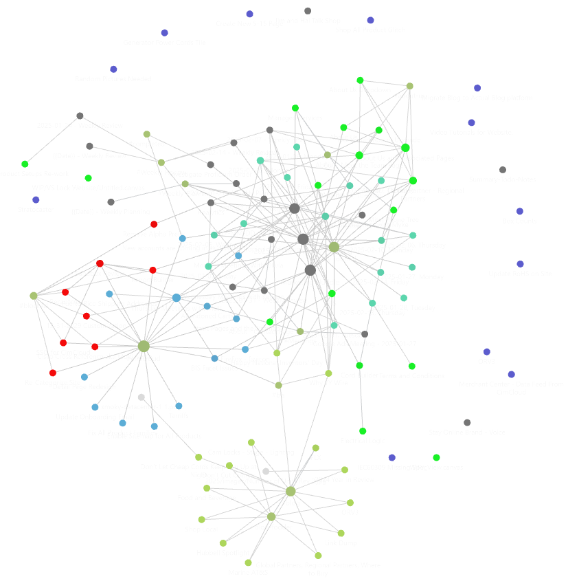

I've become a wee bit obsessed with Obsidian.
If you're not familiar, Obsidian is a note-taking tool packed with nifty features.
I've been using it for a while, but only lately, have really started to exercise the features.
I'd like to call out graph view. In particular, the patterns that emerge when you start to use tagging and the graph view grouping filters. Here is my current graph.
Those red items? Tagged as #blocked, The green - in my WIP (Work in Progress) folder. The purple on the periphery? Backlog items that need attention. The big gray dots are planning, review, and meetings
It's a visual representation of my workload with meaning.
As I continue to work, take notes, tag, and organize, new patterns emerge. It's like my personal pet Kombucha SCOBY1 .
Later, I may write about templating in obsidian, hotkeys, and tags, but for now, that's all.
-
Fun fact - SCOBY is an acronym like scuba. It stands for Symbiotic Culture of Bacteria and Yeast.↩